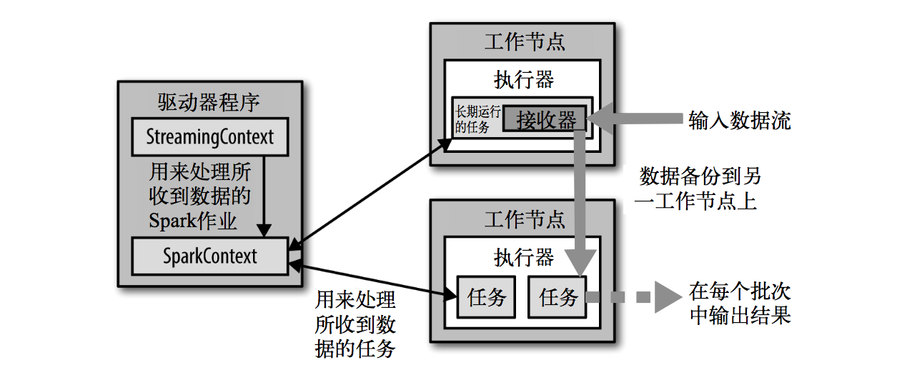
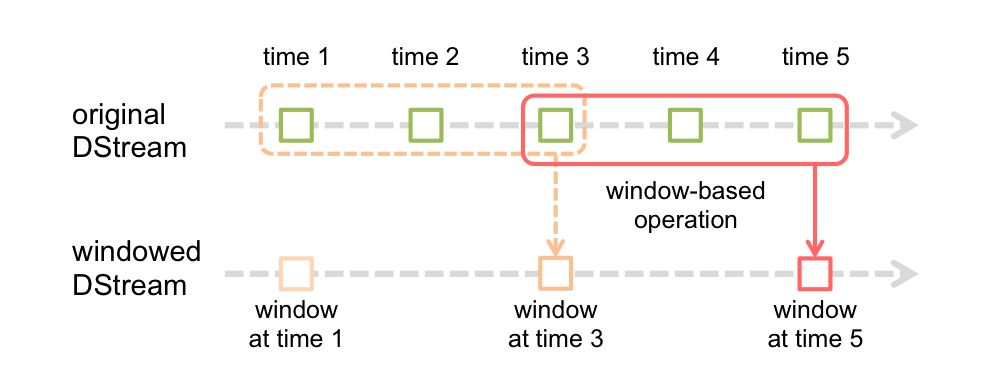
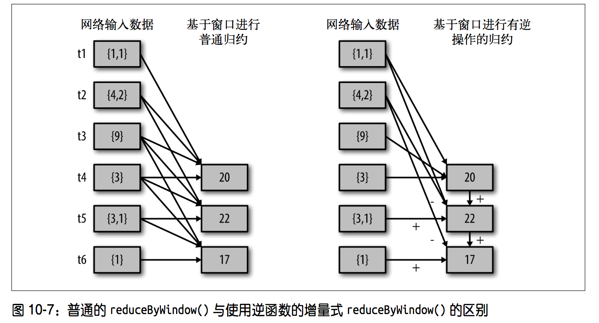
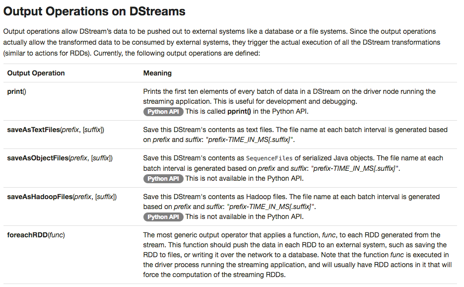

Spark Streaming Quick Start
Spark Streaming的基本数据结构是DRDD（discretized stream），DRDD和RDD类似，但是引入了时间的概念。DRDD中三个最重要的时间变量
- windowDuration，每次处理的时间窗口大小
- slideDuration，本次处理和下一次处理之间的滑动时间间隔
- batchInterval，DRDD里面每一个RDD缓存的数据时间
为了保证数据的可容灾性，DRDD里面新加了checkpoint的机制，数据可以从任何一个checkpoint恢复，以确保任务能够7*24小时执行
Spark Streaming的操作分为转化和输出，不同于RDD的转化和行动 官网
一、Demo
/**
* @description
* 监听localhost的7777端口，处理每一行的输入
* nc -lk 7777 开启端口 发送数据
* 运行代码
* spark-submit --class com.hhf.spark.streaming.StreamingSocket ./sparkStreamingExample.jar 192.168.9.223 7777
* @version V1.0
* @author HHF
* @time 2016-5-24
*/
import org.apache.spark.streaming.dstream.DStream
import org.apache.spark.SparkConf
import org.apache.spark.streaming.Seconds
import org.apache.spark.streaming.StreamingContext
object StreamingSocket {
def main(args: Array[String]) {
if (args.length < 2) {
System.err.println("Usage: NetworkWordCount <hostname> <port>")
System.exit(1)
}
val conf = new SparkConf()
conf.setAppName("StreamingSocket")
conf.setMaster("local")
// Create a StreamingContext with a 1 second batch size
val ssc = new StreamingContext(conf, Seconds(10))
// Create a DStream from all the input on port 7777
val lines = ssc.socketTextStream(args(0), args(1).toInt)
val errorLines = processLines(lines)
// Print out the lines with errors, which causes this DStream to be evaluated
errorLines.print()
// start our streaming context and wait for it to "finish"
ssc.start()
// Wait for 10 seconds then exit. To run forever call without a timeout
ssc.awaitTermination()
ssc.stop()
}
def processLines(lines: DStream[String]) = {
// Filter our DStream for lines with "error"
lines.filter(_.contains("error"))
}
}
## 建议直接走官网的详细demo
二、架构设计
 参考来自《Saprk快速大数据分析》，很详细清楚的说明了spark streaning的执行过程。针对每一种数据源，都将有一个与之对应的长期运行的接收器，所以收到的数据都会有一个备份，任务的执行都将发生在副本上，万一数据丢失，将直接从接收器上重新将数据copy过来。
Spark Streaming的运行模式可以根据带不带window分为以下两种
2.1 每个batchInterval执行一次，无状态的运行

2.2 指定windowDuration、slideDuration的运行，每次移动特定的步伐，运行一个window里面的所有数据

三、转化
3.1 无状态转化
每批次的任务数据和之前的批次数据没有任何关系，无状态转化的操作和普通RDD的转化十分类似，强调transform函数，transform()的常见应用场景就是重用RDD的处理函数
val outlierDStream = accessLogsDStream.transform { rdd =>
extractOutliers(rdd)
}
3.2 有状态转化
每批次的任务数据和之前的批次数据有交集，有交集就可以有优化，尽量使得所有的数据只需要被处理一次
3.2.1 基于于滑动窗口

val ipDStream = accessLogsDStream.map(logEntry => (logEntry.getIpAddress(), 1))
val ipCountDStream = ipDStream.reduceByKeyAndWindow(
{(x, y) => x + y}, // for new
{(x, y) => x - y}, // for old
Seconds(30), // windowDuration
Seconds(10) // slideDuration
)
3.2.2 状态更新 updateStateByKey
用来一直追踪一个事件的状态
def updateRunningSum(values: Seq[Long], state: Option[Long]) = {
Some(state.getOrElse(0L) + values.size)
}
val responseCodeDStream = accessLogsDStream.map(log => (log.getResponseCode(), 1L))
val responseCodeCountDStream = responseCodeDStream.updateStateByKey(updateRunningSum _)
四、输出

五、容灾
5.1 checkpoint
ssc.checkpoint("hdfs://...")
5.2 driver程序容灾
使用StreamingContext.getOrCreate()函数，可以重新从检查点目录中初始化出streamingContext然后继续处理
StreamingContext.getOrCreate()
spark独立管理器还可以设置参数来监控程序，自动拉起任务
5.3 executor节点容灾
数据在多个工作节点上备份
5.4 接收器容灾
将数据备份，允许一台工作节点数据丢失
@ 学必求其心得，业必贵其专精 @ WHAT - HOW - WHY @ 不积跬步 - 无以至千里